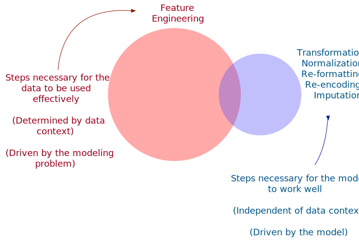

forested_train
#> # A tibble: 5,685 × 19
#> forested year elevation eastness northness roughness tree_no_tree dew_temp precip_annual temp_annual_mean temp_annual_min temp_annual_max temp_january_min vapor_min vapor_max canopy_cover lon
#> <fct> <dbl> <dbl> <dbl> <dbl> <dbl> <fct> <dbl> <dbl> <dbl> <dbl> <dbl> <dbl> <dbl> <dbl> <dbl> <dbl>
#> 1 No 2016 464 -5 -99 7 No tree 171 282 976 -444 1657 296 191 1534 4 -121.
#> 2 Yes 2016 166 92 37 7 Tree 600 1298 1022 72 1432 612 60 747 33 -122.
#> 3 No 2016 644 -85 -52 24 No tree 67 288 877 -632 1457 298 219 1396 0 -120.
#> 4 Yes 2014 1285 4 99 79 Tree 191 1621 561 -248 948 173 88 545 74 -123.
#> 5 Yes 2013 822 87 48 68 Tree 195 2200 862 -68 1290 435 147 861 48 -121.
#> 6 Yes 2017 3 6 -99 5 Tree 793 2211 1062 377 1423 702 34 578 79 -124.
#> 7 Yes 2014 2041 -95 28 49 Tree -422 1551 75 -947 517 -366 73 481 48 -120.
#> 8 Yes 2015 1009 -8 99 72 Tree 172 2396 659 -298 1130 188 92 781 76 -122.
#> 9 No 2017 436 -98 19 10 No tree 180 234 980 -423 1628 332 178 1527 0 -119.
#> 10 No 2018 775 63 76 103 No tree 62 432 851 -550 1370 332 241 1237 7 -120.
#> # ℹ 5,675 more rows
#> # ℹ 2 more variables: lat <dbl>, land_type <fct>Extras - Recipes
Introduction to tidymodels
Looking at the predictors
Working with other models
Some models can’t handle non-numeric data
- Linear Regression
- K Nearest Neighbors
Some models struggle if numeric predictors aren’t scaled
- K Nearest Neighbors
- Anything using gradient descent
Types of needed preprocessing
Do qualitative predictors require a numeric encoding?
Should columns with a single unique value be removed?
Does the model struggle with missing data?
Does the model struggle with correlated predictors?
Should predictors be centered and scaled?
Is it helpful to transform predictors to be more symmetric?
Two types of preprocessing

Two types of preprocessing
General definitions
- Data preprocessing is what you do to make your model successful.
- Feature engineering is what you do to the original predictors to make the model do the least work to perform great.
Working with dates
Datetime variables are automatically converted to an integer if given as a raw predictor. To avoid this, it can be re-encoded as:
- Days since a reference date
- Day of the week
- Month
- Year
- Leap year
- Indicators for holidays
Two types of transformations
Static
- Square root, log, inverse
- Dummies for known levels
- Date time extractions
Trained
- Centering & scaling
- Imputation
- PCA
- Anything for unknown factor levels
Trained methods need to calculate sufficient information to be applied again.
The recipes package
- Modular + extensible
- Works well with pipes ,
|>and%>% - Deferred evaluation
- Isolates test data from training data
- Can do things formulas can’t
How to write a recipe
forested_rec <- recipe(forested ~ ., data = forested_train) %>%
step_dummy(all_nominal_predictors()) %>%
step_zv(all_predictors()) %>%
step_log(canopy_cover, offset = 0.5) %>%
step_normalize(all_numeric_predictors())
How to write a recipe
forested_rec <- recipe(forested ~ ., data = forested_train) %>%
step_dummy(all_nominal_predictors()) %>%
step_zv(all_predictors()) %>%
step_log(canopy_cover, offset = 0.5) %>%
step_normalize(all_numeric_predictors())
Start by calling recipe() to denote the data source and variables used.
How to write a recipe
forested_rec <- recipe(forested ~ ., data = forested_train) %>%
step_dummy(all_nominal_predictors()) %>%
step_zv(all_predictors()) %>%
step_log(canopy_cover, offset = 0.5) %>%
step_normalize(all_numeric_predictors())
Specify what actions to take by adding step_*()s.
How to write a recipe
forested_rec <- recipe(forested ~ ., data = forested_train) %>%
step_dummy(all_nominal_predictors()) %>%
step_zv(all_predictors()) %>%
step_log(canopy_cover, offset = 0.5) %>% step_normalize(all_numeric_predictors())
Use {tidyselect} and recipes-specific selectors to denote affected variables.
Using a recipe
forested_rec <- recipe(forested ~ ., data = forested_train) %>%
step_dummy(all_nominal_predictors()) %>%
step_zv(all_predictors()) %>%
step_log(canopy_cover, offset = 0.5) %>% step_normalize(all_numeric_predictors())
Save the recipe we like so that we can use it in various places, e.g., with different models.
Using a recipe with workflows
Recipes are typically combined with a model in a workflow() object:
forested_wflow <- workflow() %>%
add_recipe(forested_rec) %>%
add_model(linear_reg())
Recipes are estimated
Every preprocessing step in a recipe that involved calculations uses the training set. For example:
- Levels of a factor
- Determination of zero-variance
- Normalization
- Feature extraction
Once a recipe is added to a workflow, this occurs when fit() is called.
Debugging a recipe
- Typically, you will want to use a workflow to estimate and apply a recipe.
- If you have an error and need to debug your recipe, the original recipe object (e.g.
forested_rec) can be estimated manually with a function calledprep(). It is analogous tofit(). See TMwR section 16.4.
- Another function,
bake(), is analogous topredict(), and gives you the processed data back.
Your turn

Take the recipe and prep() then bake() it to see what the resulting data set looks like.
Try removing steps to see how the result changes.
05:00
Printing a recipe
forested_rec
#>
#> ── Recipe ────────────────────────────────────────────────────────────
#>
#> ── Inputs
#> Number of variables by role
#> outcome: 1
#> predictor: 18
#>
#> ── Operations
#> • Dummy variables from: all_nominal_predictors()
#> • Zero variance filter on: all_predictors()
#> • Log transformation on: canopy_cover
#> • Centering and scaling for: all_numeric_predictors()Prepping a recipe
prep(forested_rec)
#>
#> ── Recipe ────────────────────────────────────────────────────────────
#>
#> ── Inputs
#> Number of variables by role
#> outcome: 1
#> predictor: 18
#>
#> ── Training information
#> Training data contained 5685 data points and no incomplete rows.
#>
#> ── Operations
#> • Dummy variables from: tree_no_tree and land_type | Trained
#> • Zero variance filter removed: <none> | Trained
#> • Log transformation on: canopy_cover | Trained
#> • Centering and scaling for: year and elevation, ... | TrainedBaking a recipe
prep(forested_rec) %>%
bake(new_data = forested_train)
#> # A tibble: 5,685 × 20
#> year elevation eastness northness roughness dew_temp precip_annual temp_annual_mean temp_annual_min temp_annual_max temp_january_min vapor_min vapor_max canopy_cover lon lat forested
#> <dbl> <dbl> <dbl> <dbl> <dbl> <dbl> <dbl> <dbl> <dbl> <dbl> <dbl> <dbl> <dbl> <dbl> <dbl> <dbl> <fct>
#> 1 0.206 -0.450 -0.0203 -1.38 -0.874 -0.169 -0.864 0.532 -0.403 0.959 -0.0702 0.755 1.21 -0.566 -0.175 -0.988 No
#> 2 0.206 -1.07 1.38 0.563 -0.874 1.33 0.132 0.726 1.24 0.159 1.34 -1.00 -1.00 0.494 -0.856 1.10 Yes
#> 3 0.206 -0.0762 -1.17 -0.711 -0.506 -0.533 -0.858 0.116 -1.00 0.248 -0.0613 1.13 0.820 -1.73 0.270 0.175 No
#> 4 -0.413 1.26 0.109 1.45 0.683 -0.0987 0.448 -1.21 0.221 -1.56 -0.621 -0.625 -1.57 0.917 -1.52 0.654 Yes
#> 5 -0.723 0.294 1.31 0.721 0.445 -0.0847 1.02 0.0529 0.795 -0.346 0.552 0.166 -0.683 0.690 -0.419 1.32 Yes
#> 6 0.516 -1.41 0.138 -1.38 -0.917 2.01 1.03 0.894 2.21 0.127 1.75 -1.35 -1.48 0.951 -1.84 -0.338 Yes
#> 7 -0.413 2.83 -1.32 0.435 0.0343 -2.25 0.380 -3.26 -2.01 -3.09 -3.03 -0.826 -1.75 0.690 -0.0159 1.65 Yes
#> 8 -0.103 0.682 -0.0636 1.45 0.532 -0.165 1.21 -0.801 0.0620 -0.915 -0.554 -0.571 -0.908 0.931 -0.636 -1.33 Yes
#> 9 0.516 -0.508 -1.36 0.306 -0.809 -0.137 -0.911 0.549 -0.336 0.856 0.0909 0.581 1.19 -1.73 0.760 -0.209 No
#> 10 0.826 0.196 0.960 1.12 1.20 -0.550 -0.717 0.00667 -0.741 -0.0616 0.0909 1.43 0.373 -0.296 0.155 -0.204 No
#> # ℹ 5,675 more rows
#> # ℹ 3 more variables: tree_no_tree_No.tree <dbl>, land_type_Non.tree.vegetation <dbl>, land_type_Tree <dbl>Tidying a recipe
Once a recipe as been estimated, there are various bits of information saved in it.
- The
tidy()function can be used to get specific results from the recipe.
Your turn
Take a prepped recipe and use the tidy() function on it.
Use the number argument to inspect different steps.
05:00
Tidying a recipe
Tidying a recipe
Using a recipe in tidymodels
The recommended way to use a recipe in tidymodels is to use it as part of a workflow().
When used in this way, you don’t need to worry about prep() and bake() as it is handled for you.